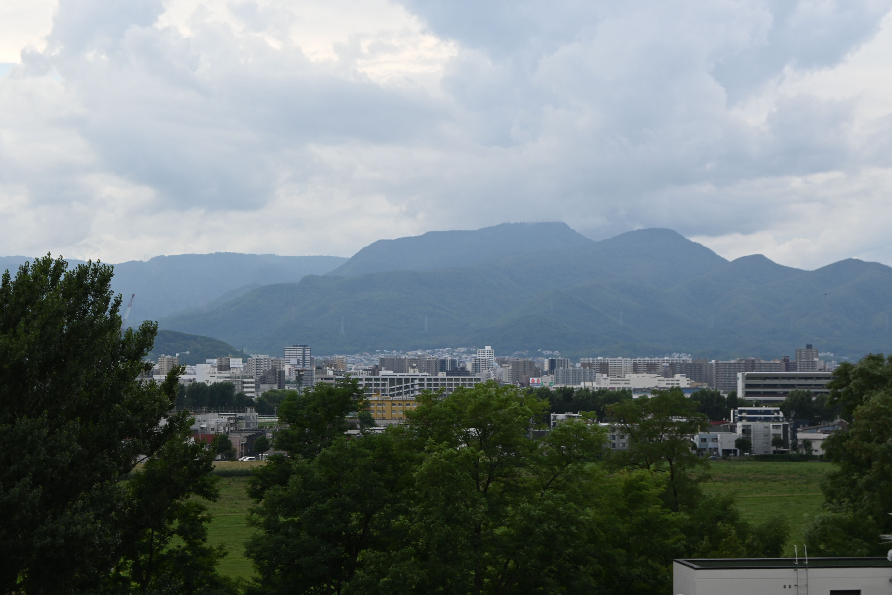

2025年12月7日(日) - 8日(月)

画像電子学会ビジュアルコンピューティング研究会では、「VCワークショップ2025 in 札幌定山渓（VCWS2025）」の講演者および参加者を下記の要領にて募集いたします。本ワークショップは、1泊2日の合宿形式で開催され、各セッションでは座長の指導のもと、活発な議論が展開されます。1件あたり約30分の時間枠を設け、講演者の発表と質疑応答をインタラクティブに進める形式を採用しており、好評を得ています。皆様の積極的なご参加をお待ちしております。
今年は北海道札幌市定山渓ビューホテルにて開催され、札幌市街から車で1時間弱とアクセスの良い温泉地です。
本年度も通常の現地開催を予定しており、懇親会などのイベントは感染対策に十分配慮した環境で行います。
コンピュータグラフィックス、情報可視化、ビジュアリゼーション、コンピュータビジョン、画像処理、画像計測、ビジョンとグラフィクスの統合・融合、視覚情報とその他の感覚情報との統合に関して、また、上記に関連する新しい分野からの研究も歓迎します。
定山渓ビューホテル（北海道札幌市南区定山渓温泉東2丁目）
https://www.jozankeiview.com/
- アクセス情報 https://www.jozankeiview.com/access/
※費用については、後日情報を更新します。
講演登録ページ (締切：2025年10月31日（金））
参加登録ページ (締切：2025年10月31日（金））
VC研究会 VCWS担当
E-mail: masataka_sawayama(a)[@にご変換ください]ist.hokudai.ac.jp
お問い合わせの際には、件名を「VCWS2025に関する問い合わせ」としていただければ幸いです。
担当：土橋宜典，澤山正貴
VCWS2024 in 大宰府
VCWS2023 in 葉山
VCWS2022 in 諏訪湖
VCWS2019 in 松山